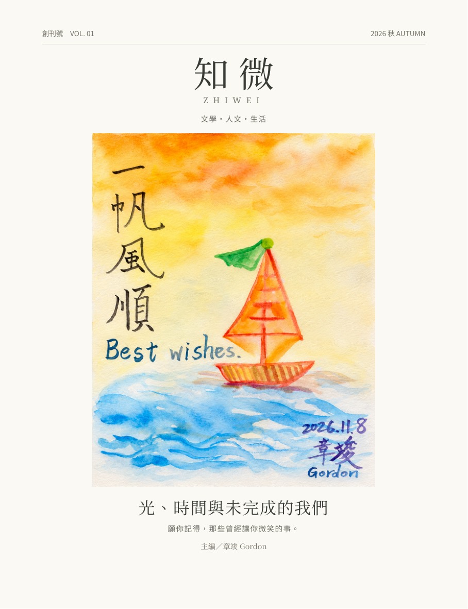
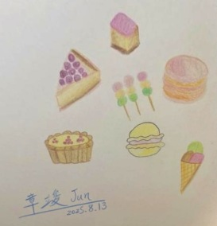
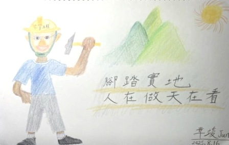

← 歷期雜誌

VOL. 01 · 2026 AUTUMN
光、時間與未完成的我們
2026 秋季創刊號
主編／章竣 Gordon · 繁體中文 · 10 頁
願你記得，那些曾經讓你微笑的事。
免註冊 · CC BY-NC-ND 4.0 · 原版面 10 頁
另開 PDF 原版（若手機未直接下載，可從瀏覽器分享或儲存檔案。）
創刊介紹
這幾年，我逐漸養成了閱讀、看展、聽音樂、畫畫及書寫的習慣。這些事物陪伴我度過不同的人生階段，也讓我有機會重新思考自己與家人、朋友，以及生活中的各種經歷。這也是我想創辦《知微》的原因。
《知微》是一本以文學、人文及生活為主的獨立電子雜誌。創刊號以「光、時間與未完成的我們」為主題，收錄五篇新作，從童年與家人的相處、對理想人生的思考，到日常生活及藝術創作。其中一篇，也是我寫給父親六十歲生日的文章。
我希望這本雜誌不一定要帶給大家什麼深刻的人生道理，而是在忙碌的生活中，陪伴讀者想起一些曾經讓自己感到開心的時刻，也試著重新理解那些曾經讓我們感到難過的事情。
在刊物最後，我也留了兩頁給讀者。你可以寫下自己的故事、畫一幅畫，或者只是記錄此刻的心情。創刊初期的幾期電子雜誌將免費提供完整閱讀及下載，希望藉此認識更多喜歡閱讀、思考與創作的朋友。
願你記得，那些曾經讓你微笑的事。
創刊序 · 02
生活中，值得留下的事
Things Worth Keeping in Life
文／章竣 Gordon
這幾年，我逐漸養成了閱讀、看展、聽音樂及書寫的習慣。有時候，是因為一部電影讓我想起曾經讀過的一本書；有時候，則是因為一首歌曲，讓我想起某個人，或是一段已經過去很久的時光。這些事物未必與我所學的專業有直接的關係，卻在不同的人生階段，帶給我許多不同的感受與想法。
我開始思考，在我們努力學習、工作，以及追求自己理想生活的過程中，是否也有一些值得珍惜的事物，被忙碌的我們逐漸遺忘了？或許是小時候喜歡吃的食物、與朋友相處的某個午後，又或許是曾經受到某個人溫柔對待的時刻。這些事情看似平凡，卻曾經真實地帶給我們快樂。
當然，人生中也不只有美好的回憶。我們都可能經歷挫折、失去與遺憾。有些事情，在當下的我們看來，或許很難理解，也很難接受。然而，隨著時間的經過，當我們再次回頭看待這些經歷時，是否也有可能產生不同於當初的理解？那些曾經讓我們感到難過的事情，不一定會因此變成美好的回憶，卻可能使我們更加理解自己，也更加理解別人的處境與感受。
這也是我想創辦《知微》的原因。我希望透過文字、繪畫、音樂，以及生活中的一些小事，與讀者分享我在不同階段的感受與思考。它不一定要解答生活中的困惑。我只是希望，在忙碌了一整天之後，當你翻開這本雜誌時，能夠暫時放下疲憊，從某些文字或畫面中，想起自己曾經開心的時刻，也感受到一點被理解的溫暖。
在這本雜誌的最後，我也為你保留了兩頁尚未完成的篇幅。你可以寫下一些自己的故事、畫一幅畫，或只是記錄此刻的心情。希望多年以後，當我們再次翻開這本雜誌時，除了閱讀當時的文字，也能想起那個時候的自己，以及那些我們曾經真心感受過的美好。
章竣 2026 年秋
回本期目錄 ↑原創文學 01 · 03
下午五點，我們回家
The Way Home at Five
文／章竣 Gordon
還記得小學的時候，每天下午五點放學，我會在學校的家長接送公車亭，等著媽媽騎摩托車來接我回家。那個時候，只是單純覺得終於可以離開學校了，看到家人來接自己，也覺得特別開心。有時候，我會和媽媽分享當天在學校發生的事情，她也會聽我說，並給予一些回應。
回到家後，盥洗、休息一下，便能聞到從廚房傳來的白米飯香氣，以及媽媽炒菜、炸豬排的味道。晚上，一家人坐在一起吃飯。餐桌上並不是什麼昂貴的食材，只是一些我們熟悉的臺灣家常菜，但那個時候的我，確實覺得自己很幸福。
直到這幾年，隨著年紀增長，自己也開始接觸工作，逐漸感受到生活中的各種壓力，才慢慢明白，原來當年那些看似平凡的日子，並不是那麼理所當然。家裡的大人也有自己的工作、生活，以及許多需要面對的事情，卻仍然願意抽出時間來接我放學，笑著帶我回家，聽我分享那些對大人而言或許只是微不足道的小事。現在回想起來，我覺得這是一件很不簡單，也很值得感謝的事。
有時候我會想，長大以後的我們，努力學習、工作，希望有一天能夠過上自己理想中的生活。然而，在追求幸福的過程中，我們是否也曾經忘記，自己其實早已在某些時刻感受過幸福？那些幸福未必來自昂貴的物品，也不一定伴隨著什麼值得紀念的成就，可能只是一頓晚餐，或是有人願意花一些時間，聽自己分享今天發生了什麼事。
我不知道未來的自己是否會結婚、是否會有自己的孩子，又或者是否會與另一個人建立屬於我們自己的家庭。但我希望，無論未來的自己成為一個什麼樣的大人，仍然願意保有傾聽他人及感同身受的能力。就像小時候，家人願意聽我分享生活中的大小事，讓我感到開心與自在一樣。或許有一天，我也能以這樣的方式陪伴別人，讓他們感受到我曾經感受過的溫暖。
回本期目錄 ↑原創文學 02 · 04
原來，超人也是平凡人
寫給六十歲的爸爸
My Father, the Everyday Hero
文／章竣 Gordon
小時候，總覺得爸爸很辛苦。當別人的爸爸在週六、週日，或是晚上休息的時候，我的爸爸卻經常需要出門加班。有時候是因為突然跳電，需要趕去搶修；有時候則是在颱風天，外面颳著風、下著雨，爸爸還得前往機房操作發電機，處理緊急用電的狀況。那個時候的我，雖然知道爸爸工作很辛苦，卻還不太能理解這份工作背後所需要承擔的責任。
但在小時候的我眼中，爸爸也像是一個超人。家裡的冰箱、冷氣、小家電，甚至是我們的電池玩具壞掉了，爸爸似乎都有辦法修好。國小自然課老師交代的回家作業及實驗教具，爸爸也會幫忙製作。到了國中，家政課需要縫製抱枕，自己手藝不巧，交到爸爸手上之後，他卻能很快地把它做得很漂亮。有時候媽媽有事，或是加班比較晚回家，爸爸也會煮幾道色香味俱全的熱炒料理，再煮一鍋魚湯給我們喝。小時候的我，真的覺得爸爸十項全能。
直到這幾年，自己逐漸長大，也開始接觸工作，才慢慢發現，原來要成為小時候自己眼中那樣的大人，是一件很不容易的事情。光是處理自己的課業、工作及生活中的各種事情，有時候就已經讓我覺得很疲倦了，更何況爸爸除了自己的工作之外，還有家庭需要照顧。以前覺得爸爸會修東西、會縫紉，也會煮飯，是一件很自然的事情；現在回想起來，這些能力的背後，其實是許多生活經驗的累積，以及他願意為家人付出的時間。
當然，隨著年紀增長，我也不再像小時候一樣，總是覺得爸爸說的話都是對的。有時候，我不太能理解爸爸的想法，甚至覺得和他溝通是一件很累的事情。我們對於某些事物有著不同的價值觀，也有各自對生活的理解。但我逐漸明白，理解一個人，並不代表自己必須認同他的所有想法。即使有些事情我們還是無法理解彼此，我仍然能夠看見並感謝爸爸這些年來的付出。
有時候，我也會思考，現在的自己有哪些地方，其實是和爸爸、媽媽學來的。懂得感恩及珍惜他人的付出，不輕易瞧不起任何人，也希望自己能夠好好善待每一個人，因為大家的生活其實都不容易。面對工作上的困難與人生中的挫折，不輕易服輸，並願意嘗試尋找解決問題的方法，也是我從爸爸身上學到的態度。雖然我們所學的專業不同，未來所走的人生道路也未必相同，但有些對待事情及他人的態度，確實是爸爸、媽媽透過身教與言教，慢慢教會我的。
今年十一月二十七日，是爸爸六十歲的生日。比起小時候，現在的我似乎更能理解他的一些辛苦，也逐漸發現，原來小時候眼中那個十項全能的超人，也只是一個會疲憊、有自己的生活，也有自己煩惱的平凡人。而自己在逐漸長大的過程中，也在不知不覺間，從他身上學到了許多事情。
謝謝爸爸，也謝謝媽媽這些年來的付出。
爸爸，六十歲生日快樂。希望您往後的日子平安、健康，也能多留一些時間，好好享受自己的生活。
2026 年 11 月 27 日
謹以此文獻給我的父親。
回本期目錄 ↑人文思想 · 05
我還是想成為理想中的大人
On Dreams, Happiness and an Ordinary Life
文／章竣 Gordon
隨著年紀增長，我有時候會想像，未來的自己會過著什麼樣的生活。我希望自己能夠具有一定的專業能力，從事自己喜歡的工作，也希望有足夠的能力照顧自己及家人。工作之餘，仍然有時間閱讀、彈琴、畫畫，以及與自己喜歡的人相處。對我而言，這些都是理想生活的一部分。
但我也曾經試著思考，假如未來的自己，並沒有成為現在所期待成為的那個大人呢？或許我仍然有一份穩定的工作，能夠養活自己，也有家人、朋友及許多自己喜歡的事物陪伴著我。我想，這樣的人生應該也是平凡而幸福的。只是坦白來說，我或許還是會覺得有些遺憾，好像自己的人生少了些什麼，也會因為沒有實現當初的夢想，而感到一些難過。
然而，當我回頭看看自己的爸爸、媽媽，以及身邊許多認真生活的人時，我並不會因為他們沒有取得多麼顯赫的社會成就，就認為他們的人生是平庸的。相反地，我很欣賞他們面對生活的態度，也很珍惜自己從他們身上學到的許多事情。這也讓我開始思考，為什麼自己在看待別人的人生時，可以看見這麼多值得欣賞的地方，但在看待自己的人生時，卻似乎又有著不同的期待與標準？而自己所認為尚未擁有的那個「什麼」，真的有那麼必要嗎？
反過來想，假如有一天，我真的實現了現在的夢想，取得了自己所期待的專業資格及成就，卻也因此少了許多與家人相處、陪伴自己所愛的人，以及做自己喜歡的事情的時間呢？或許一開始，我會很開心，覺得自己終於成為了那個曾經以為很成功的大人。但隨著時間的經過，我可能也會漸漸開始反思，這樣的生活是否真的是自己想要的？它是否適合自己，也適合自己所愛的人？或許到了那個時候，我又會對人生中的某些事情有所取捨，甚至重新理解自己當初所認為的成功。
目前的我，或許還沒有辦法給自己一個明確的答案。我仍然想努力成為自己理想中的大人，也不希望將來的自己，因為害怕有所失去，就不願意嘗試追求夢想。但我也希望，無論未來的自己取得了什麼樣的成就，都仍然願意回頭看看現在的生活，理解自己的感受，也理解身邊的人。也許多年以後，我對成功與幸福會有不同於現在的理解。而我所期待成為的那個大人，或許也會隨著自己的成長，慢慢有所改變。
回本期目錄 ↑生活美學 · 06
從晨光到夕陽
我所期待的一天
From Morning Light to Sunset
文／章竣 Gordon
如果有一天，沒有課業及工作的壓力，也沒有什麼特別需要完成的事情，我會想怎麼度過這一天呢？
我想，我會在早上七點起床，吃一份舒肥雞胸蔬菜捲餅，搭配一杯無糖豆漿，接著到健身房做一個小時的重量訓練。回家盥洗後，換上一件整齊的襯衫及海軍藍長褲，穿上自己喜歡的棕色尖頭牛皮鞋，整理一下頭髮，再噴上喜歡的香水。好好打理自己，準備出門與喜歡的人見面。
找一間清幽、裝潢溫馨，有著木質地板的餐廳，聽著莫札特的鋼琴奏鳴曲，一起享用悠閒的早午餐。我們可以吃著自己喜歡的餐點，喝著熱可可，慢慢地聊天。有時候，看著對方的眼神，聽著對方分享生活中的大小事，似乎也不需要特別安排什麼，就已經是一件很開心的事情。
吃完早午餐後，一起牽著手到美術館看畫展，分享彼此對作品的感受與想法。看完展覽，再到公園的草地上鋪一張野餐墊，坐著休息、聊天，甚至像小時候一樣，一起吹泡泡。下午到迪化街逛逛小店，吃一些喜歡的甜點及美食，也到臺北霞海城隍廟及大稻埕慈聖宮走走、拜拜。傍晚時分，一起在大稻埕河岸騎著腳踏車，迎著涼風，看著橘紅色的夕陽餘暉，慢慢踏上回家的路。
當然，即使沒有其他人的陪伴，我仍然願意為自己安排這樣的一天。過去的我也曾經獨自看展、散步，做一些自己喜歡的事情。那樣的生活讓我覺得自在、舒服，也很踏實。在一個人度過的時間裡，我似乎也比較有機會關注自己的內心與情緒，思考最近的生活，以及自己真正的感受。
我想，與喜歡的人一起享受生活，和自己一個人享受生活，是兩種不同的感受，並沒有哪一種比較好。我很期待有一天，能夠與喜歡的人分享這些平凡的時光；但在那之前，我也願意好好享受自己現在的生活。
對我而言，能夠做一些自己喜歡的事情，也能夠有時間陪伴自己及自己所愛的人，或許就是生活中很簡單，卻也很值得珍惜的幸福。
回本期目錄 ↑藝文隨筆 · 07
屬於自己的節奏
At My Own Rhythm
文／章竣 Gordon
以前，不論是彈琴還是畫畫，我都很重視他人對自己的評價與回饋。希望自己能夠有所進步，也希望完成的作品能夠受到別人的欣賞與肯定。然而，這一年，我開始慢慢學習享受創作的過程，而不只是關注最後的成果。
畫畫的時候，我喜歡感受畫筆一筆一畫地在紙上留下痕跡，自己決定色彩的搭配及畫面的配置。彈琴的時候，我也喜歡感受手指與琴鍵接觸的感覺，透過不同的觸鍵、力度及節奏，表達自己對一首樂曲的理解。在這些過程中，我感受到一種能夠掌握主動權的自在。
我想，這並不代表自己不再重視技巧的進步，也不代表他人的意見不再重要。只是比起以前，現在的我也開始學習重視自己在創作當下的感受，並思考自己真正喜歡的是什麼。
生活中，有許多事情並不是我們所能決定的。但至少在拿起畫筆、坐在鋼琴前的那些時刻，我可以依照自己的感受，決定此刻想要呈現的色彩與聲音。
現在的我，仍然在慢慢學習，希望自己在傾聽他人意見的同時，也不讓他人的評價與眼光完全左右自己的選擇，或阻擋自己真正想望的事物。無論是藝術創作，還是自己的生活，我都希望能夠逐漸找到屬於自己的節奏。
紙上展間 FROM THE STUDIO

〈甜點 Dessert〉
色鉛筆・2025.08.13
〈做工人〉
色鉛筆・2025.08.16歷年作品選集／章竣。原作照片局部裁切、透視及亮度整理。
回本期目錄 ↑未寫完的兩頁 01 · 08
那些值得留下的記憶
Memories Worth Keeping
回想自己的生活，有沒有一些事情，直到後來才逐漸理解它的珍貴？
- 有沒有一段平凡的時光，現在想起來，仍然會讓你微笑？
- 有沒有一個曾經影響你的人，讓你想對他說一聲謝謝？
- 無論未來成為什麼樣的人，你希望自己仍然保有哪些美好的特質？
選擇自己想回答的問題即可，不必急著找到答案。這些文字可以只留給自己。
歡迎下載 PDF，在原本的留白頁手寫或繪畫。
未寫完的兩頁 02 · 09
為自己留一天
A Day for Myself
如果可以按照自己喜歡的方式度過一天，你會想做些什麼？
- 早晨 MORNING
- 午後 AFTERNOON
- 黃昏 EVENING
- 近期，我想為自己實際完成的一件小事：
- 畫下一個喜歡的生活片刻，或留下一句想送給自己的話。
日期及署名（選填）可在 PDF 第九頁填寫。網站不收集讀者書寫內容。
下載 PDF 手寫版封底 · 10
一帆風順
願我們在認真生活的同時，仍然保有感受幸福的能力。
也願我們在各自的人生道路上，慢慢找到屬於自己的節奏。
Until we meet again in another season.
出版資訊 COLOPHON
《知微 ZHIWEI》2026 年秋季創刊號／第 01 期
主編、創作構想與原始素材：章竣 Gordon
文字擬稿、統稿及排版：ChatGPT 輔助，依主編對談及修訂方向編製
封面原畫：〈一帆風順〉，水彩，2026.11.08；封面影像經生成式 AI 輔助整理與重構。內頁插畫：章竣歷年作品；照片經裁切及亮度整理。
文字校訂參考：教育部《重訂標點符號手冊》修訂版
發行形式：免費電子刊物・預計每二至三個月一期
個人部落格：gordonchang666.github.io